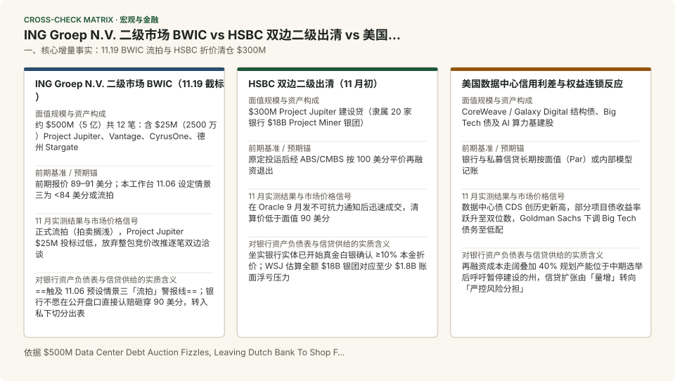
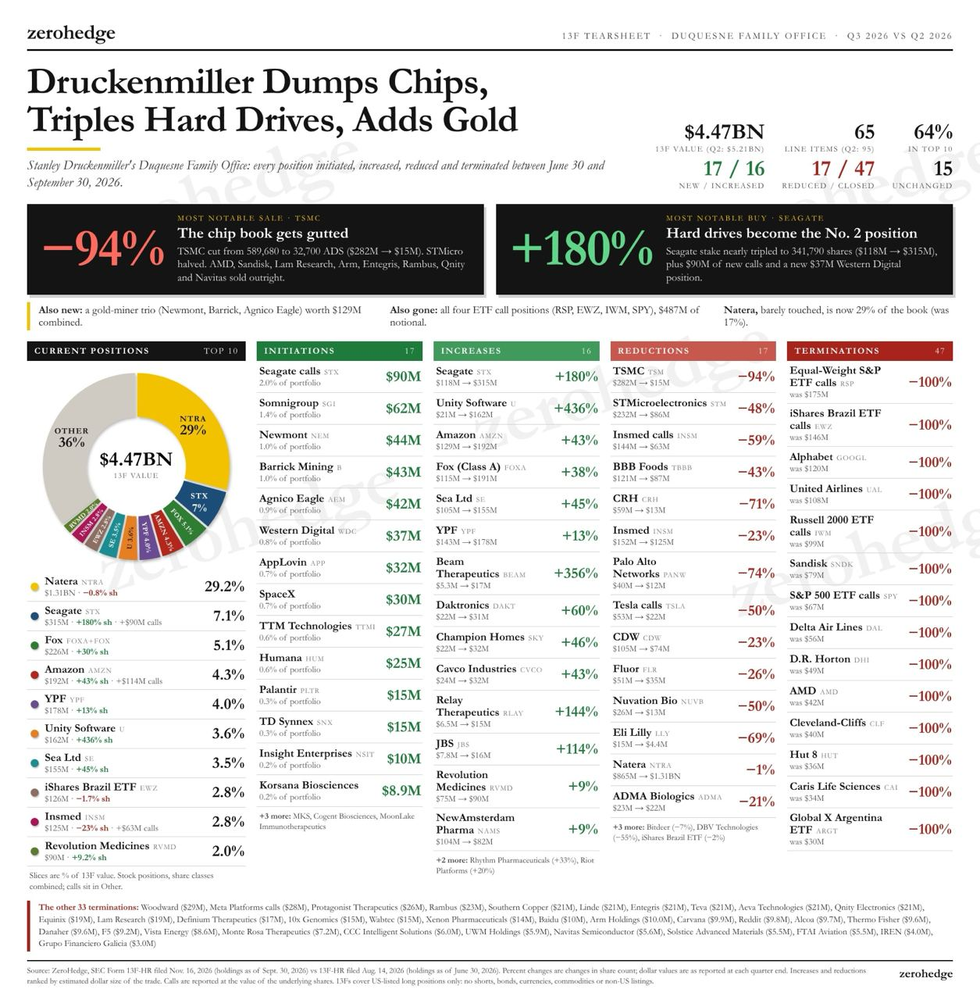
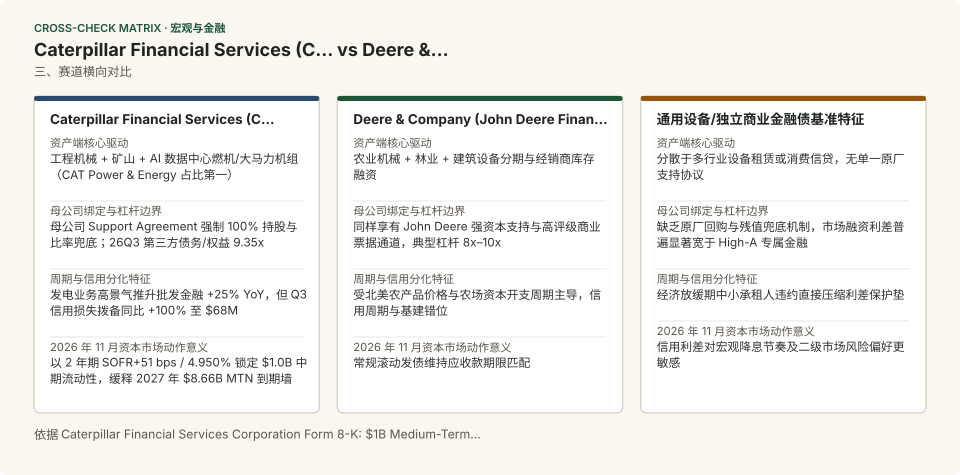
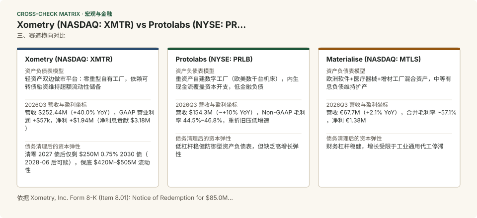
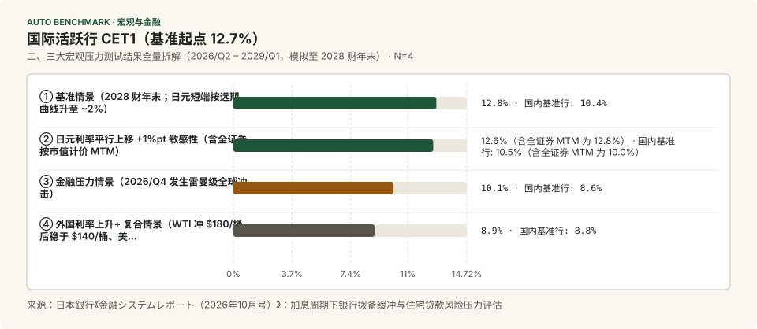

Bisnow (Matt Wasielewski) · 转引 Bloomberg (2026-11-20) 2026-11-23 500M Data Center Debt Auction Fizzles… 1/1放大 ING 5 亿（$500M）BWIC 流拍并转入逐笔双边洽谈：荷兰银行 ING Groep N.V.（全球超 200 笔数据中心融资的头部牵头行）原计划通过罕见的纯数据中心贷款 BWIC（Bids Wanted In Competition，约 12 笔贷款、总面值 $500M / 5 亿美元、单笔起投门槛 $10M）一揽子出表。Bloomberg 2026-11-20 报道证实… 阅读导读 原件 ↗
Duquesne Family Office · SEC Form 13F-HR 2026-11-16 Druckenmiller Dumps Chips, Triples Hard… 1/1放大 已穿透 SEC EDGAR CIK 0001536411（2026-11-16 13F-HR）及 @standuquesne / ICE × Trade[XYZ] 一手披露，ZeroHedge 退居 trigger_source。 · Duquesne Family Office · SEC Form 13F-HR · 有来源缺口 本地原件归档 · 固定材料版本 · 一手原站 ·… 阅读导读 原件 ↗
Caterpillar Financial Services Corp. · SEC Form 8-K / 424B3 / 10-Q 2026-11-13 Caterpillar Financial Services… 1/1放大 Caterpillar Financial Services Corporation 于 2026-11-09 定价、2026-11-13 交割的 Series L 中期票据（Medium-Term Notes）共募资 $1.0B（10 亿美元，净募资 $998.374M），由 $400M（4 亿美元）2 年期 Compounded Daily SOFR + 51.0 bps 浮… 阅读导读 原件 ↗
Xometry, Inc. · SEC Form 8-K / Form 10-Q 2026-11-05 Xometry, Inc. Form 8-K (Item 8.01)… 1/1放大 Xometry 于 2026-11-05 发出赎回通知（Notice of Redemption），定于 2026-11-20 按 100% 本金加应计利息赎回全部未转股的约 $85.0M 2027 年 2 月到期 1.00% 可转换优先票据（1.00% Convertible Senior Notes due 2027）。结合 Q3 2026 10-Q 披露“Q3 已触发… 阅读导读 原件 ↗
日本銀行 (Bank of Japan) 2026-10-23 日本銀行《金融システムレポート（2026年10月号）》：加息周期下银行拨备缓冲与住… 1/1放大 金融周期整体无重大失衡，仅股票指标亮「红」：14 项金融活动指标（FAIXs）中 11 项维持「绿灯」，金融缺口（Financial Gap）小幅走阔主要由价格因子拉动。东京核心三区二手公寓涨势趋缓，但商业地产写字楼投资回报率利差（Yield Gap）因房价与利率双升持续收窄；截至 2026 年 3 月末，银行业涉房贷款合计占总贷款比重仍高——住房贷款占 24.0%、房地产交易与… 阅读导读 原件 ↗